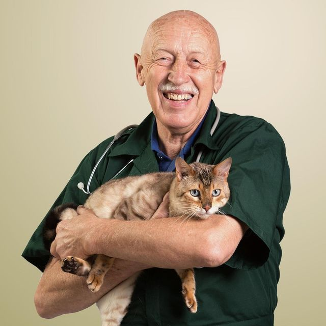
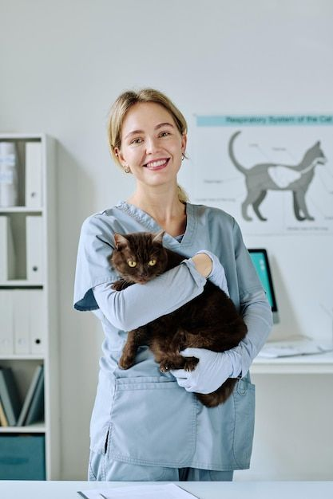

Available today
Available todayDr. David Williams
Senior Veterinarian
Four decades of trusted care with a gentle, reassuring approach.
Explore our experienced care team, compare specialties, and reserve a visit in minutes.
Every PawPal professional is licensed, compassionate, and ready to help.
Available todaySenior Veterinarian
Four decades of trusted care with a gentle, reassuring approach.
Companion Animal Care
Patient-focused wellness care for cats, dogs, and new pet parents.

TomorrowVeterinary Surgeon
Skilled in soft-tissue surgery and calm, clear recovery planning.
 Available today
Available todayVeterinary Dentist
Making dental checkups comfortable with gentle preventive care.
Emergency & Urgent Care
Fast, thoughtful support when your pet needs care right away.
 Available today
Available todayExotic Animal Medicine
Specialized, low-stress care for birds, rabbits, and small pets.
 Available today
Available todayInternal Medicine
Careful diagnostics and personalized plans for complex conditions.

TomorrowFeline Health Specialist
Cat-friendly visits designed around comfort and lower stress.
 Available today
Available todayOrthopedic Surgeon
Advanced mobility care to help pets move comfortably again.
 Tomorrow
TomorrowBehavior & Wellness
Practical wellness strategies for happier pets and households.
Avian & Exotic Care
Experienced medical support for unusual and feathered companions.
11 trusted veterinarians